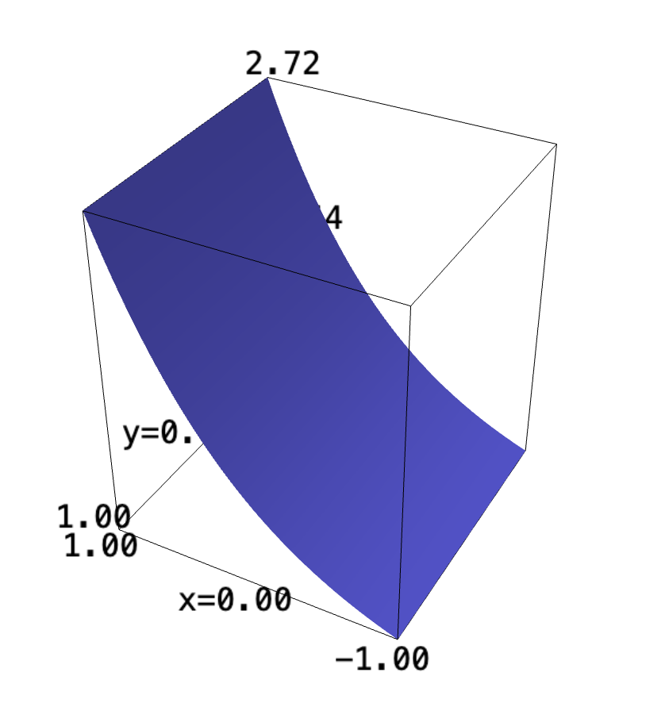
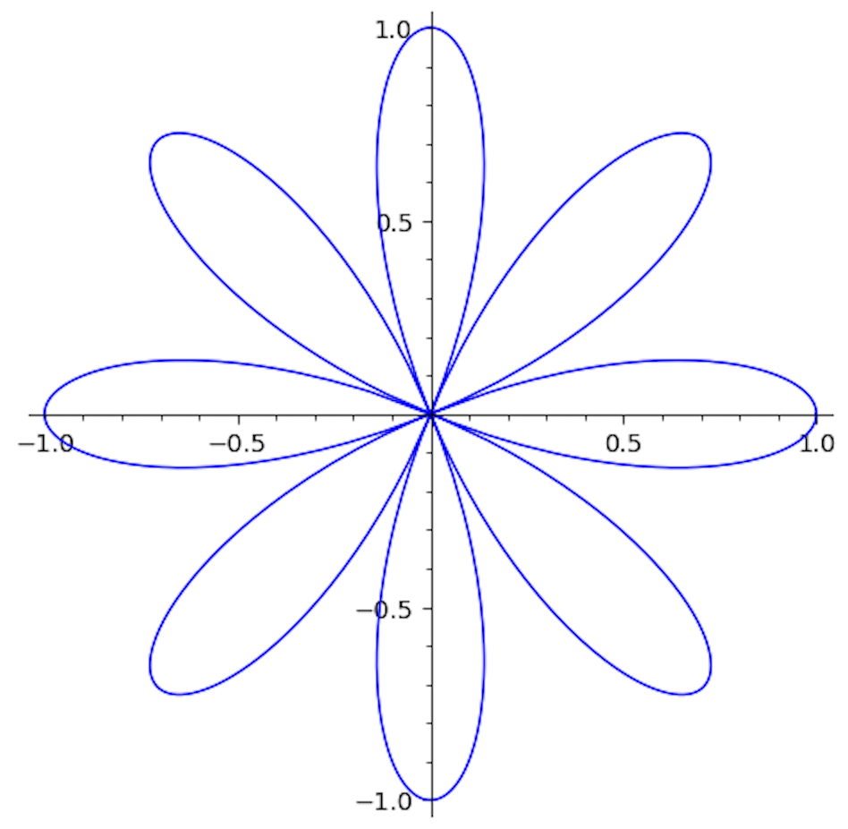

Backlinks
Table of Contents
1 Triangle Bottom
Let's plot the region first:
f(x,y) = e^x plot3d(f, (x, -2, 2), (y, -2,2))

We can see that the shape is symmetric along the \(y\) axis. Hence, a triangle along it would be symmetric and divide an area under exactly by half. Therefore, we can simply take the integral \(x,y \in [0,1]\), and divide the result by half.
\begin{align} &\int_0^1 \int_0^1 e^x\ dx\ dy\\ \Rightarrow &\int_0^1 e-1\ dy\\ \Rightarrow &\left ey-y\ \right|_0^1\\ \Rightarrow &e-1 \end{align}The area under the prescribed triangle, then, would be:
\begin{equation} \frac{e-1}{2} \end{equation}2 Polar Function
Take the function:
\begin{equation} f(x,y) = \frac{1}{\sqrt{x^2+y^2}} \end{equation}f(x,y) = 1/sqrt(x^2+y^2) plot3d(f, (x,-5,5), (y,-5,5))

Evidently, it is actually much easier to manipulate this shape in polar form (note the bottom squaring-and-add). As a reminder, the parameterization into polar is as follows:
\begin{equation} \begin{cases} y = r\ sin(\theta)\\ x = r\ cos(\theta) \end{cases} \end{equation}Supplying these parameterizations:
\begin{align} &f(x,y) = \frac{1}{\sqrt{x^2+y^2}} \\ \Rightarrow &f(r, \theta) = \frac{1}{\sqrt{(r\ cos(\theta))^2+(r\ sin(\theta))^2}} \\ \Rightarrow &f(r, \theta) = \frac{1}{\sqrt{r^2(cos^2(\theta)+sin^2(\theta))}} \\ \Rightarrow &f(r, \theta) = \frac{1}{\sqrt{r^2}} \\ \Rightarrow &f(r, \theta) = \frac{1}{|r|} \end{align}We are going to be integrating over \([0,2\pi]\), a circle, of radius 1 \([0,1]\). We will note that these values never approaches being negative, making the absolute value have no utility.
When integrating over a radius, we also note that change in theta \(d\theta\) must be multiplied by \(r\) to get the circumference on each ring. \(\frac{r}{|r|}\), therefore—given that the values never approach negative—we have \(\frac{r}{|r|} = 1\).
Therefore, taking the actual integral:
\begin{align} &\int_0^1 \int_0^{2\pi} 1\ d\theta\ dr\\ \Rightarrow & \int_0^1 2\pi\ dr\\ \Rightarrow & 2\pi \end{align}3 Rose
Taking the actual rose, and plotting it first:
r(theta) = cos(4*theta) polar_plot(r, (theta, 0, 2*pi))

Observing the shape, and the domain of \(cos\) being \([-1,1]\), we can see that the diametre of the flower is \(2\) inches.
I am not quite sure what the surface area of the expression in \(\mathbb{R}^1\to\mathbb{R}^1\) means, but one possible solution would be the total area of the pedals, times two—resulting in both sides.
We know that, for instance, \(cos(\theta)=0\) when \(\theta =\frac{\pi}{2}, \frac{3\pi}{2}\). Therefore, \(cos(4\theta)\) would be \(0\) when \(\theta = \frac{\pi}{8}, \frac{3\pi}{8}\). This lines up with the lower-right pedal.
Let's take the integral, then:
\begin{align} &\int_{\frac{\pi}{8}}^{\frac{3\pi}{8}} cos(4\theta)\ d\theta\\ \Rightarrow &\left\frac{1}{2}sin(4\theta)\right|_{\frac{\pi}{8}}^{\frac{3\pi}{8}}\\ \Rightarrow &-0.5-0.5\\ \Rightarrow &-1 \end{align}The negative value simply indicates its below the \(x\) axis, but each pedal has an area of \(1\). Multiplying this value by the number of pedals \(8\), we have a total area of \(8\) on one side.
Multiplying this again by \(2\) to account for both sides, we have \(16\) square inches as the surface area of the entire flower.